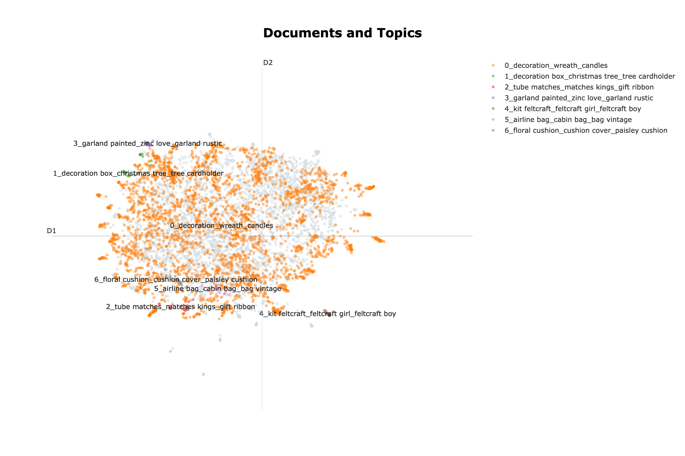
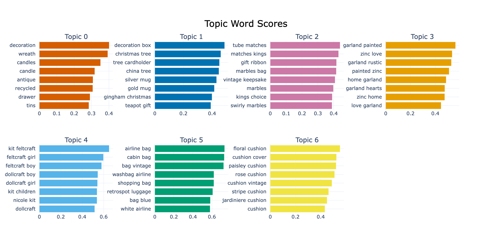
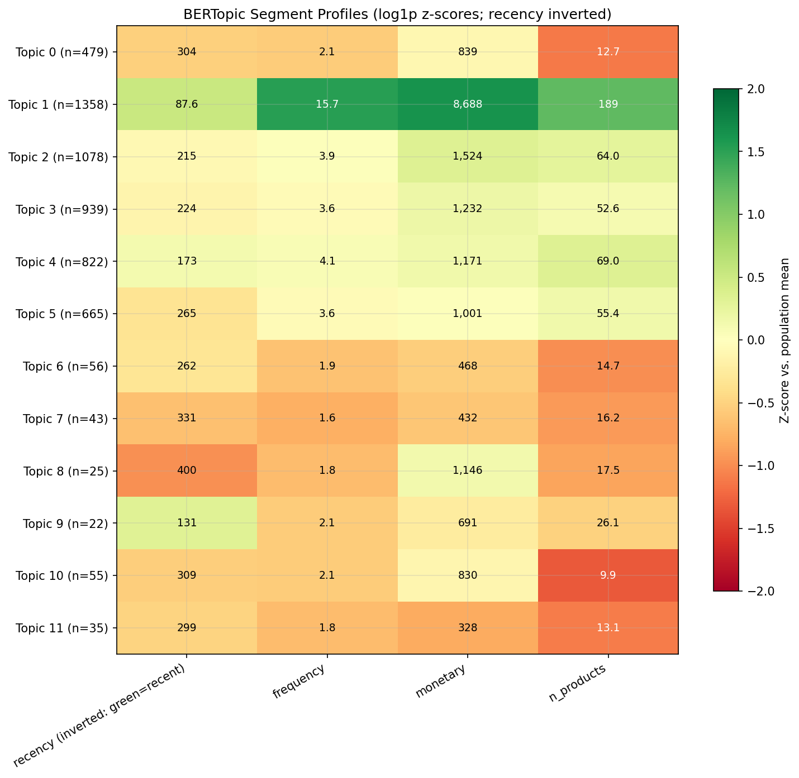

4.1 Customer Segmentation
A segmentation project should produce something your team can actually use, not just a presentation. The real deliverable is a segment_id that connects directly to your CRM and ad platforms, plus a concise brief for each segment: who they are, why they matter, and what actions your team should take.
This chapter walks through how to build that kind of artifact in three steps:
- First, rank customers by current value. Decile analysis and RFM (Recency, Frequency, Monetary) provide a quick way to segment on value.
- Next, group customers by behavior. Behavioral clustering surfaces patterns that value tiers alone cannot capture.
- Finally, add purchase meaning. Embedding-based segmentation shows what customers actually buy, not just how much they spend.
Behavioral Variables and Profile Variables
When building customer segments, the variables fall into two broad types. Behavioral variables describe what customers do: recency, frequency, spend, categories purchased, product breadth, returns, and discount dependence. Profile variables describe who they are or where you can reach them: age, income, household composition, geography, loyalty tier, and channel preference.
For marketing segmentation, behavioral variables are the stronger foundation. What someone viewed, bought, or what similar customers chose is usually a better predictor of their next action than demographics. Relying on demographics alone, like “this product for a man in his 30s” or “this offer for a high earner,” is a much weaker signal than the customer’s actual purchase history.
Profile variables still have a role. Use them after building segments to understand who is in each group, where to reach them, and how to tailor communication.
Start Simple: Deciles and RFM
The simplest approach is rule-based: you define the cutoffs instead of relying on an algorithm. Decile analysis and RFM are the most common examples.
Decile Analysis
Decile analysis splits customers into ten equal groups by revenue. The pattern often follows the Pareto principle: a small group drives most of the revenue. The top decile gets retention and VIP treatment. The next three deciles are the main target for growth campaigns. The middle three get low-cost automated nurture, and the bottom three are excluded from expensive offers. You can set this up quickly and give your team a clear action plan.

RFM Analysis
RFM gives a more nuanced view. It is the most widely used segmentation framework in direct marketing because teams already think in these terms: lapsed high-spenders, new frequent buyers, and similar patterns.
| Variable | Definition | Better Direction |
|---|---|---|
| Recency (R) | Days since the customer’s last purchase | Lower is better |
| Frequency (F) | Number of purchases in the observation period | Higher is better |
| Monetary (M) | Total spend in the observation period | Higher is better |
Independent sorting splits each variable into quintiles separately, creating a three-digit score (R=5, F=4, M=3) and up to 125 groups. Sequential sorting nests the splits: first by Recency, then Frequency within each Recency group, then Monetary, so Recency gets the most weight.
PyMC-Marketing, the library used for CLV modeling in Section 4.2, ships a quartile-based rfm_segments() utility that scores R, F, and M and assigns named segments straight from a transaction table. It is less flexible than K-Means but works well in practice and stays fast on very large customer bases.
Decile and RFM are quick to set up and easy to use. But they only create value tiers, not full customer profiles. Two customers with similar RFM scores can behave very differently: one might buy full-price items across many categories, while another buys only discounted items in a single category. To see those differences, you need to move from value tiers to richer behavioral variables.
Behavioral Clustering with K-Means
K-Means is a classic clustering algorithm that still works well for marketing segmentation. Normalize features with StandardScaler so spend does not dominate, and start with 6 to 10 behavioral variables. Beyond RFM, useful additions include average order value, basket size, and return rate.
Log-transform the skewed variables before scaling. Spend, frequency, recency, and basket size are usually heavily right-skewed: a handful of customers buy far more than everyone else. StandardScaler only centers and rescales, so those long tails survive. Fed raw, K-Means spends its first splits separating big spenders from small ones and mostly rediscovers value tiers, and any extra cluster it finds is a tiny outlier pocket too small to act on. Applying log1p to the skewed features (a simple rule: transform anything with skew above ~1) compresses the tails, so the clusters reflect behavioral shape rather than spend magnitude, and balanced, actionable segments emerge. On the companion dataset this is the difference between K-Means collapsing to three value tiers and splitting the base into five balanced, comparably-sized behavioral groups.
Choosing K is part statistics, part judgment. The elbow method helps narrow the range, but it rarely pins the number. On customer data its sharpest bend often sits at K=3, which usually just recovers value tiers (heavy, average, lapsed) that decile and RFM already capture. To segment on behavior rather than value, push into the practical range (often 4 to 8 segments) and let actionability decide: keep the K whose segments your marketing team would actually treat differently. If they cannot describe a different action for each segment, you have too many.

On the companion dataset, K=5 is where the segments stop being value tiers and start being briefs. Table 2 is that fit. The shares and the profile means come from the notebook (spend, trips, and departments are two-year totals averaged within the segment); the names and the last two actions are the analyst’s reading of its profile heatmap, which is the step the notebook leaves to you.
| Segment | Share | Profile | Action |
|---|---|---|---|
| Heavy loyalists | 25% | $7,300 spend, 209 trips, 17 departments | VIP retention |
| Frequent small-basket | 23% | $3,228 spend, 157 trips, $24 orders | Grow the basket |
| Occasional big-basket | 22% | $1,938 spend, 56 trips, $38 orders | Low-cost nurture |
| Discount-leaning | 19% | $1,087 spend, 19% discount share, narrow range | Offers only with margin guardrails |
| Lapsed | 11% | $334 spend, last purchase 17 weeks ago | One cheap reactivation, then stop |
The names are shorthand; the brief is the row. This is the table to hand to the marketing team for the actionability check below: if two rows would get the same campaign, merge them.
Numeric clustering still flattens product meaning. With inputs like frequency, spend, recency, category breadth, and discount dependency, two customers can look similar even if the products they buy are very different. To capture that meaning, bring product text directly into the segmentation.
Embedding-Based Segmentation with BERTopic
To capture what customers actually buy, treat each customer’s purchase history as text: concatenate their purchased product descriptions into a single string (the customer document), then use an embedding model to turn that string into a dense vector. In this embedding space, birthday candles and party plates sit close together while an antique teapot sits far away, so clustering the vectors splits customers by purchase meaning, not just purchase volume.
The examples use the UCI Online Retail II dataset, about a million transactions from a UK gift retailer, whose free-text product descriptions are exactly what an embedding model reads. We run the whole pipeline with BERTopic.

Why BERTopic?
Done by hand, this pipeline means chaining four libraries: SentenceTransformers to embed the documents, UMAP to reduce dimensions, HDBSCAN to cluster, and custom code to read the result. BERTopic wraps all four behind one API and adds the parts that make the output usable: c-TF-IDF to pull each segment’s distinctive keywords, reduce_outliers() for the customers HDBSCAN leaves unassigned, transform() to score new customers without refitting, and an optional LLM step for naming. The rest of this section follows that pipeline.
Constructing the Customer Document
For example, a customer’s document might look like this:
red retrospot cake stand, party bunting, paper cups, birthday candles, cake cases
A numeric model may only see this customer as frequent or high-spend. The embedding model sees the product meaning: party supplies and celebration-related purchases.
Building one is a group-and-concatenate over the transaction log:
# Keep each customer's top-N products by revenue, then join the descriptions
prod_rev = (
df.groupby(["CustomerID", "Description"])["Revenue"].sum()
.reset_index()
.sort_values(["CustomerID", "Revenue"], ascending=[True, False])
)
top_products = prod_rev.groupby("CustomerID").head(TOP_N)
customer_docs = (
top_products.groupby("CustomerID")["Description"]
.apply(lambda d: ", ".join(d))
.reset_index(name="doc")
)Three practical decisions shape the quality of the segments more than anything else.
Which products go in. Top-N purchased items (by frequency or revenue) usually outperform the full purchase history. The full list adds noise from one-off buys; the top items capture the customer’s actual pattern.
Whether to weight by revenue. Including a high-value item once versus a low-value item once can misrepresent what the customer cares about. Revenue-weighting (repeating product mentions in proportion to spend) sharpens the segments for customers with mixed baskets. Cap the weights or use log-spend weighting when price differences across products are large; otherwise a single luxury purchase can dominate the document.
Filtering generic products. Items like “Gift Card,” “Postage,” or generic SKUs are noise: they appear across all segments and dilute the keywords. Filter them out by StockCode patterns or maintain a small exclusion list. This single step often makes the difference between segments that mean something and segments that mean nothing.
A lightweight sentence-embedding model is enough for most retail catalogs. The quality of your segments depends much more on how you design and validate the customer document than on which embedding model you pick. The notebook uses a local SentenceTransformers model for reproducibility, but the same workflow can also use API-based embedding models such as OpenAI embeddings.
Reading the Output
The fit behind that map is a single call. A local embedding model turns each document into a vector, and BERTopic handles the clustering and keyword extraction:
from bertopic import BERTopic
from sentence_transformers import SentenceTransformer
embedding_model = SentenceTransformer("all-MiniLM-L6-v2") # local, lightweight
embeddings = embedding_model.encode(customer_docs["doc"].tolist())
topic_model = BERTopic(embedding_model=embedding_model)
topics, probs = topic_model.fit_transform(
customer_docs["doc"].tolist(), embeddings=embeddings
)The companion notebook configures the UMAP, HDBSCAN, and c-TF-IDF sub-models explicitly; this is the same pipeline with defaults. The payoff is a keyword fingerprint for each segment:

Give these panels to a marketer and they should quickly see which categories, campaigns, and creative fit each group.
When One Theme Dominates
Real catalogs often have one broad theme covering most customers and a tail of sharp niches at the edges. HDBSCAN surfaces both, but after outlier reduction the broad theme inflates into a single mega-topic that is too large to act on as one segment. The fix is surgical: run K-Means on just the mega-topic’s embeddings and split it into activation-sized sub-segments, while keeping the small niche topics as discovery findings. This applies the “HDBSCAN for discovery, K-Means for operations” pattern inside the dominant cluster, not on the full base. The companion notebook does this automatically when any topic exceeds 50% of the base.
The LLM-Naming Trap
LLM-assisted naming can make segments feel more credible than they really are. Feed any cluster, even a random one, into an LLM and ask for a name and persona, and you will get a polished, convincing description. The narrative sounds plausible whether the cluster is meaningful or not.
Two safeguards:
- Validate the keyword evidence before reading the LLM’s narrative. If you cannot see a clear theme in the top keywords yourself, the LLM’s name is fiction.
- Test the name with marketing. If they would write the same campaign brief for two differently-named segments, the names are decorative, not informative.
Companion notebooks: the full working code is split across two notebooks, each on the dataset that suits its method.
sec4.1_traditional_segmentation.ipynb: decile, RFM, and K-Means on the Dunnhumby “The Complete Journey” dataset, the same dataset the CLV chapter uses, so segment membership carries through. View on GitHubsec4.1_semantic_segmentation.ipynb: the embedding pipeline (customer-document construction, generic-product filtering, embedding, BERTopic clustering, keyword extraction, and LLM-assisted naming) on the UCI Online Retail II dataset, which has the rich product descriptions this method needs. Its optional LLM-naming step is currently configured for Anthropic and needs thelitellmpackage and anANTHROPIC_API_KEY; without it, that cell skips and the rest still runs. View on GitHub
Is Your Segmentation Any Good?
Three checks, in priority order.
Actionability is what matters most. Show the segment profiles to your marketing team. For each pair of segments, ask: “Would you use a different message, channel, offer, or frequency?” If the answer is “I’d do the same thing for both,” the segmentation is not actionable, no matter how clean the math looks. The usual culprit is a segment that is average on everything; merge it with a neighbor or revisit your variable selection.
Stability. Re-run clustering on two non-overlapping time periods and check that customers mostly land in the same segments. The Adjusted Rand Index (ARI) puts a number on this; if too many customers swap segments between periods, you cannot rely on them for campaigns. The companion notebooks show both checks: the ARI computation in the semantic notebook and a migration-matrix view in the traditional one.
On the grocery data the migration matrix ranks customers by revenue quintile in each year rather than re-clustering them: 70% of the top quintile and 61% of the bottom stay put from one year to the next, while the middle three hold only about 40%. The middle of the base is where segment assignments are least reliable, so that is where a campaign built on them needs the most slack.

Size. Each segment should be big enough to act on, but the right minimum depends on the business and the campaign: there is no universal floor. As a rough guide, avoid segments so small you cannot run a meaningful campaign against them; for broad targeting that often means somewhere around 10 percent of the base, while a genuinely high-value niche can be a deliberate exception. In practice a handful of segments, often 4 to 8, is enough.
Segments are built from behavioral differences, but the campaigns assigned to those segments still need to be tested. Refer back to A/B Test Design before declaring victory.
Method Cheat Sheet
| Question | Method | Input | Output |
|---|---|---|---|
| Which customers deserve more attention right now? | Decile / RFM | Transaction log | Value tiers or R/F/M scores |
| What behavioral patterns exist beyond value tiers? | K-Means | Numeric behavioral features | Behavioral segment labels |
| What do customers actually buy? | Embedding-based clustering | Customer documents from product descriptions | Meaning-based segments with keyword fingerprints |
Key Takeaways
- Build segments from behavior, then profile with demographics. Feed behavioral variables into the algorithm; use profile variables afterward to describe, target, and reach each segment.
- Each method answers a different question. RFM ranks customers by current value. K-Means uncovers behavioral patterns beyond value tiers. Embedding-based segmentation shows what customers actually buy. Choose the method that matches your business decision.
- Validate first for actionability, then for stability and size. If your marketing team would treat two segments the same way, merge them.